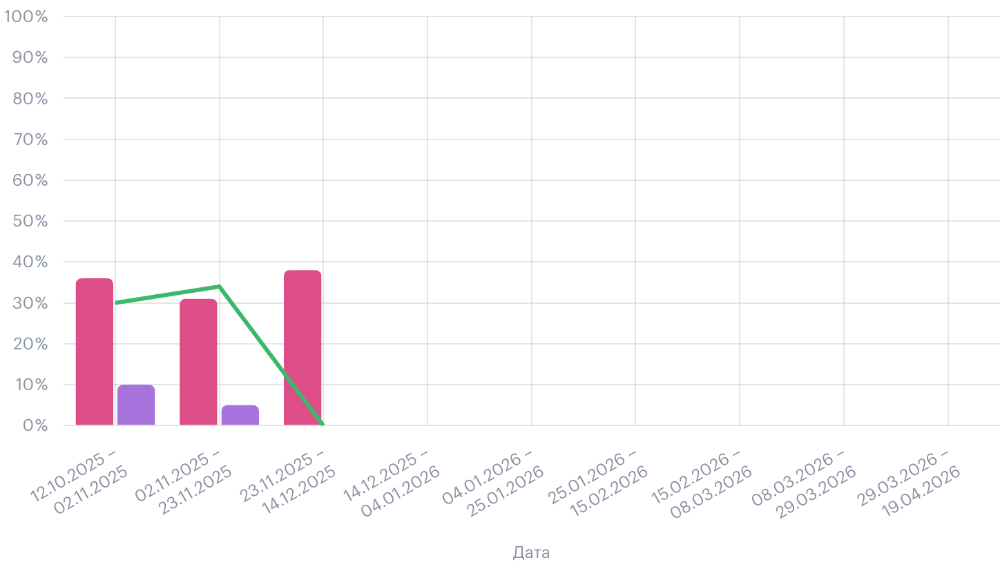
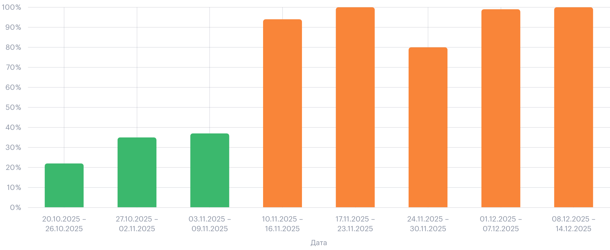
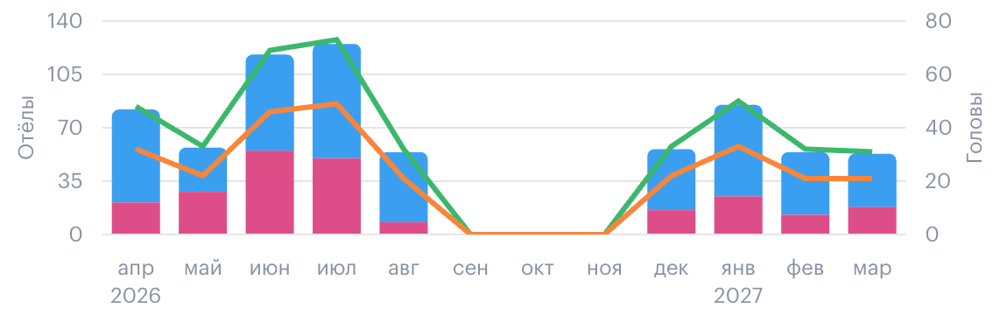
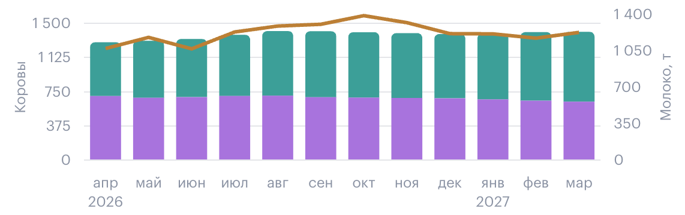

Charts · ReactChart + Line/Bar/Scatter/Pie
В product-src графики рисуются через chart.js + react-chartjs-2. Каждый тип (LineChart/BarChart/ScatterChart/PieChart) оборачивает базовый ReactChart, который рендерит <canvas>. Wrapper — тонкий: div.chart { position: relative; width: 100%; }. Высота задаётся пропом height. Custom <ChartLegend /> рендерится Chart.js-ом (legend handler встроен в plugins).
Source: src/features/charts/components/ReactChart/index.tsx + index.module.scss (40 строк — только canvas max-width + zoom-control)
<div.chart-root.position-relative.full-width> style={height}
<canvas /> ← Chart.js рисует сюда
<Tooltip /> ← custom overlay (opt.)
<div.zoomControlWrapper /> ← fade-in on hover
Типы (все оборачивают ReactChart):
LineChart type='line', datasets: LineChartDatasetConfig[]
BarChart type='bar', + isStacked, isStackedX/Y, isPercents
ScatterChart type='scatter'
PieChart type='pie'
Chart.js defaults (ReactChart/index.tsx:47-49):
Chart.defaults.font.size = 12
Chart.defaults.font.lineHeight = '16px'
Chart.defaults.font.family = 'Graphik, sans-serif'
Все скриншоты ниже — из реального product-src prod (localhost:3000), захвачены через canvas.toDataURL() на соответствующих analytics-страницах. Это 1:1 с prod-визуалом. Единственный не-скриншот — ScatterChart (не удалось найти активного использования в prod-данных, оставлен SVG proxy).
BarChart · multi-dataset + line overlay (HDR / PR / CR по неделям)
Mixed chart: bar-datasets (HDR — выявление, PR — стельность) + line dataset поверх (CR — оплодотворяемость, зелёная линия). Category scale по x (даты). Legend над canvas, интерактивный (клик — toggle visibility). Target-линия возможна через dataset с borderDash: [3,3].
Source: src/widgets/analyticsReproduction/components/ReproductionHdrAndPrChart/index.tsx — использует <BarChart> с mixed datasets (bar + line)
Скриншот · product-src prod · /analytics/reproduction/overview

BarChart · single dataset (CR по группам)
Один dataset, type='bar', категориальная шкала x (группы/даты). Столбцы с borderRadius: BARS_BORDER_RADIUS_PX (оранжевые). Tooltip mode: 'index'.
Source: src/widgets/analyticsReproduction/components/ReproductionCrChart/index.tsx — использует <BarChart>
Скриншот · product-src prod · reproductionMainCrChart

BarChart · bars + line overlay (прогноз отёлов по месяцам)
BarChart с дополнительным line dataset поверх (type: 'line' в одном из datasets). Это позволяет комбинировать категориальные bar'ы с накопленной метрикой-линией. Использ. в livestock-forecast для отёлов + ожидаемых голов.
Source: src/routes/.../analytics/livestock-forecast/+index.tsx + BarChart + mixed-type datasets
Скриншот · product-src prod · /analytics/livestock-forecast — «Отёлы и головы»

BarChart stacked · isStacked=true + line overlay
Несколько bar dataset'ов сложены по y (isStacked → isStackedX+isStackedY). Плюс поверх — line dataset (валовое значение). На scale options — { x: { stacked: true }, y: { stacked: true } }. Legend: переключаемые items per dataset.
Source: BarChart/index.tsx:118-132 (stacked) + livestock-forecast «Коровы и молоко»
Скриншот · product-src prod · /analytics/livestock-forecast — «Коровы и молоко»

ScatterChart · упрощённо (SVG proxy — нет активного использования в prod)
ScatterChart определён в коде (src/features/charts/components/ScatterChart), поддерживает type='scatter'. Каждая точка — { x, y }; dataset получает borderColor: colorStatus05OnColor, backgroundColor: dataset.color. В prod-данных на доступных analytics-страницах не найдено активного ScatterChart — типовой use-case (корреляция удой vs. сервис-период) вероятно доступен только через кастомный отчёт. Оставлен SVG proxy.
Source: src/features/charts/components/ScatterChart/index.tsx:78-117
SVG proxy · ScatterChart · height 280
Нет реального скриншота — оставлена SVG-имитация. Structurally 1:1 с .chart-root wrapper; контент — декоративное SVG.